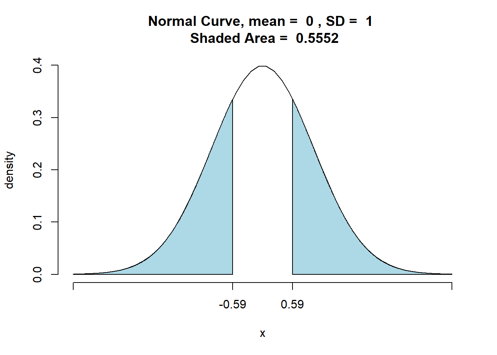
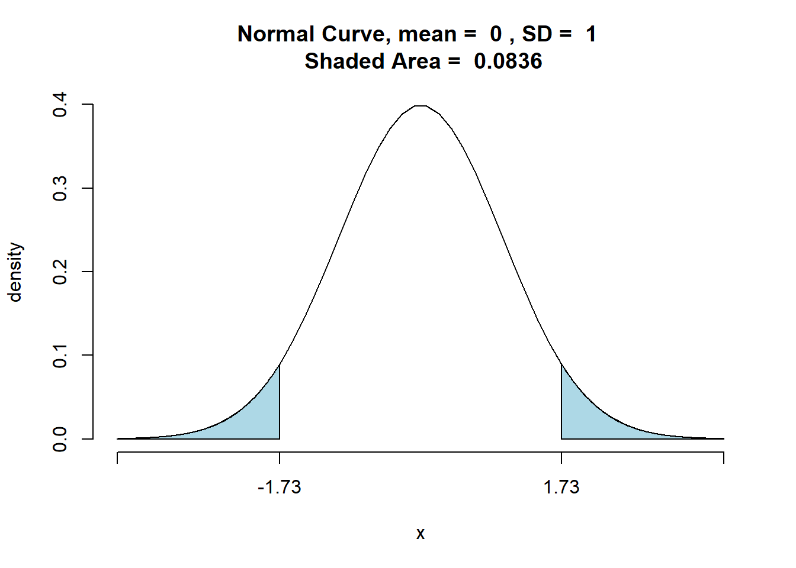
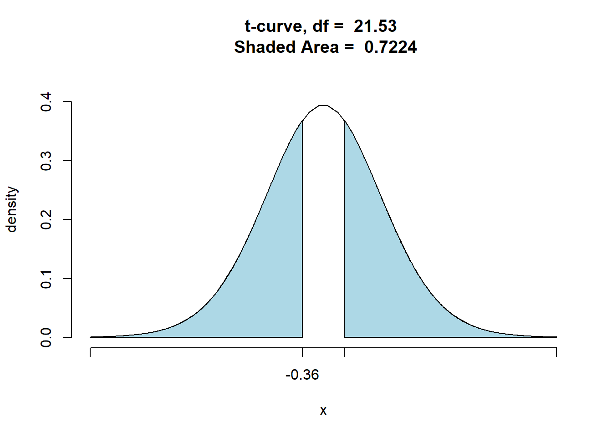
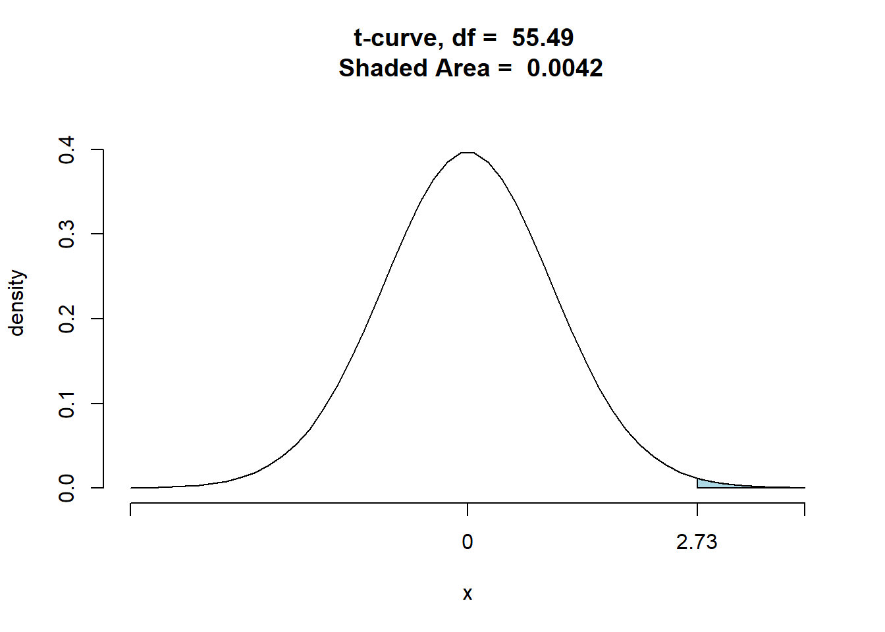
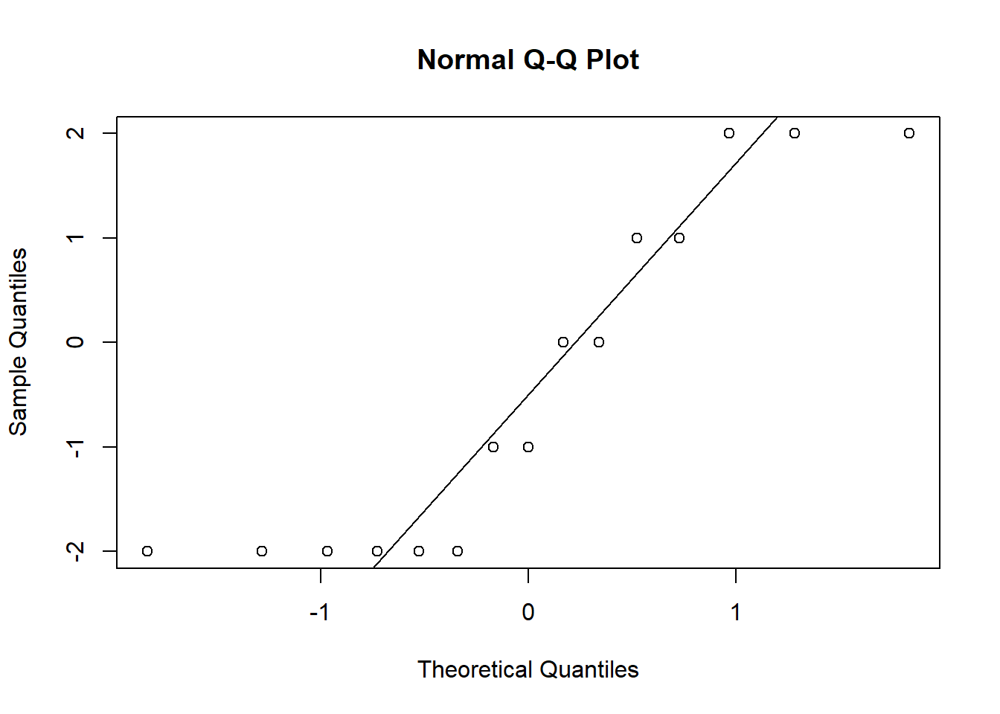

Chapter 10 Example:
A forest in Oregon has an infestation of spruce moths. In an effort to control the moth, one area has been regularly sprayed from airplanes. In this area, a random sample of 495 spruce trees showed that 81 had been killed by moths. A second nearby area receives no treatment. In this area, a random sample of 518 spruce trees showed that 92 had been killed by the moth. Do these data indicate that the proportion of spruce trees killed by the moth is different for these areas?
10.1 Assumptions
- Two indenpendt SRS’s
- Normal Distributions \(n_1 p_1=81>5\),\(n_1 (1-p_1)=414>5\)\(n_2 p_2=92>5\), \(n_2 p_2=426>5\)
- Large Populations sizes.
10.2 Hypothesis Statement
\[H_{0}:p_1=p_2\\H_{A}:p_1\neq p_2\]
10.3 Calculation
##
##
## Inferential Procedures for the Difference of Two Proportions p1-p2:
## Results taken from summary data.
##
##
## Descriptive Results:
##
## successes n estimated.prop
## Group 1 81 495 0.1636
## Group 2 92 518 0.1776
##
##
## Inferential Results:
##
## Estimate of p1-p2: -0.01397
## SE(p1.hat - p2.hat): 0.02363
##
## 95% Confidence Interval for p1-p2:
##
## lower.bound upper.bound
## -0.060287 0.032347
##
## Test of Significance:
##
## H_0: p1-p2 = 0
## H_a: p1-p2 != 0
##
## Test Statistic: z = -0.5911
## P-value: P = 0.5544
10.4 Conclusion
Since p-value>\(\alpha\), I fail to reject \(H_0\). There is not sufficient evidence to suggest that the proportion of spruce trees killed by the moth is different for these areas.
10.5 Use Real Data:
At Georgetown College, who is more likely to believe in love at first sight: a female or a male?
## love_first
## sex no yes
## female 22 18
## male 23 8## love_first
## sex no yes Total
## female 55.00 45.00 100.00
## male 74.19 25.81 100.00Hypothesis Testing: (Only do calculation)
##
##
## Inferential Procedures for the Difference of Two Proportions p1-p2:
## love_first grouped by sex
##
##
## Descriptive Results:
##
## yes n estimated.prop
## male 8 31 0.2581
## female 18 40 0.4500
##
##
## WARNING: In at least one of the two groups
## number of successes or number of failures is below 10.
## The normal approximation for confidence intervals
## and P-value may be unreliable.
##
## Inferential Results:
##
## Estimate of p1-p2: -0.1919
## SE(p1.hat - p2.hat): 0.1112
##
## 95% Confidence Interval for p1-p2:
##
## lower.bound upper.bound
## -0.409870 0.025999
##
## Test of Significance:
##
## H_0: p1-p2 = 0
## H_a: p1-p2 != 0
##
## Test Statistic: z = -1.726
## P-value: P = 0.08432
10.6 Two-Sample Inference Procedures with Means
10.7 Confidence Intervals for Two-Sample Mean.
10.8 Assumptions:
- Have two SRS’s from the populations or two randomly assigned treatment groups
- Samples are independent
- Both distributions are approximately normally
- Have large sample sizes
- Graph BOTH sets of data
- \(\sigma's\) unknown.
10.9 Calculation
\[(\bar{x_1}-\bar{x_2})\pm t_{\alpha/2}\cdot \sqrt{\frac{s_1^2}{n_1}+\frac{s_2^2}{n_2}}\]
10.10 Interpretation
We are 95% confident that the true difference in mean … lies between …
10.11 Example
Two competing headache remedies claim to give fast-acting relief. An experiment was performed to compare the mean lengths of time required for bodily absorption of brand A and brand B. Assume the absorption time is normally distributed. Twelve people were randomly selected and given an oral dosage of brand A. Another 12 were randomly selected and given an equal dosage of brand B. The length of time in minutes for the drugs to reach a specified level in the blood was recorded. The results follow:
| Brand | mean | SD | n |
|---|---|---|---|
| Brand A | 20.1 | 8.7 | 12 |
| Brand B | 18.9 | 7.5 | 12 |
Find a 95% confidence interval difference in mean lengths of time required for bodily absorption of each brand.
10.12 Assumptions
- Two independent SRS’s.
- Normal distributions given
- \(\sigma's\) unknown.
10.13 Calculation
##
##
## Inferential Procedures for the Difference of Two Means mu1-mu2:
## (Welch's Approximation Used for Degrees of Freedom)
## Results from summary data.
##
##
## Descriptive Results:
##
## group mean sd n
## Group 1 20.1 8.7 12
## Group 2 18.9 7.5 12
##
##
## Inferential Results:
##
## Estimate of mu1-mu2: 1.2
## SE(x1.bar - x2.bar): 3.316
##
## 95% Confidence Interval for mu1-mu2:
##
## lower.bound upper.bound
## -5.685410 8.08541010.14 Interpretation.
We are 95% confident that the true mean lengths of time required for bodily absorption of each brand lies between -5.69 and 8.09.
10.15 Hypothesis Testing for Two-Sample Mean (Difference of Means)
10.16 Assumptions (Same as confidence intervals)
10.17 Hypothesis Statement (Define your variables)
\[H_{0}:\mu_{1}=\mu_{2} \textbf{or} \mu_{1}-\mu_{2}=0\\H_A{}:\mu_{1}>\mu_{2} \textbf{or} \mu_{1}-\mu_{2}>0\\H_A{}:\mu_{1}<\mu_{2} \textbf{or} \mu_{1}-\mu_{2}<0\\H_A{}:\mu_{1}\neq \mu_{2} \textbf{or} \mu_{1}-\mu_{2}\neq 0\\\] ## Calculation: \[t=\frac{\bar{x_1}-\bar{x_2}}{\sqrt{\frac{s_1^2}{n_1}+\frac{s_2^2}{n_2}}}\]
10.18 Interpretation
Similar to one sample.
10.19 Example
Two competing headache remedies claim to give fast-acting relief. An experiment was performed to compare the mean lengths of time required for bodily absorption of brand A and brand B. Assume the absorption time is normally distributed. Twelve people were randomly selected and given an oral dosage of brand A. Another 12 were randomly selected and given an equal dosage of brand B. The length of time in minutes for the drugs to reach a specified level in the blood was recorded. The results follow:
| Brand | mean | SD | n |
|---|---|---|---|
| Brand A | 20.1 | 8.7 | 12 |
| Brand B | 18.9 | 7.5 | 12 |
Is there sufficient evidence that these drugs differ in the speed at which they enter the blood stream?
10.20 Assumptions
- Two independent SRS’s.
- Normal distributions given
- \(\sigma's\) unknown.
10.21 Hypothesis Statement
\[\mu_A=\mu_B\\ \mu_A\neq \mu_B\]
10.22 Calculation
##
##
## Inferential Procedures for the Difference of Two Means mu1-mu2:
## (Welch's Approximation Used for Degrees of Freedom)
## Results from summary data.
##
##
## Descriptive Results:
##
## group mean sd n
## Group 1 20.1 8.7 12
## Group 2 18.9 7.5 12
##
##
## Inferential Results:
##
## Estimate of mu1-mu2: 1.2
## SE(x1.bar - x2.bar): 3.316
##
## 95% Confidence Interval for mu1-mu2:
##
## lower.bound upper.bound
## -5.685410 8.085410
##
## Test of Significance:
##
## H_0: mu1-mu2 = 0
## H_a: mu1-mu2 != 0
##
## Test Statistic: t = 0.3619
## Degrees of Freedom: 21.53
## P-value: P = 0.721
10.23 Interpretation
Sine p-value>\(\alpha\), I fail to reject \(H_0\). There is not sufficient evidence to suggest that these drugs differ in the speed at which they enter the blood stream.
10.24 Real Data
Does the data provide strong evidence that GC males drive faster, on average, than GC females do?
##
##
## Inferential Procedures for the Difference of Two Means mu1-mu2:
## (Welch's Approximation Used for Degrees of Freedom)
## fastest grouped by sex
##
##
## Descriptive Results:
##
## group mean sd n
## male 113.5 22.57 31
## female 100.0 17.61 40
##
##
## Inferential Results:
##
## Estimate of mu1-mu2: 13.4
## SE(x1.bar - x2.bar): 4.918
##
## 95% Confidence Interval for mu1-mu2:
##
## lower.bound upper.bound
## 5.175636 Inf
##
## Test of Significance:
##
## H_0: mu1-mu2 = 0
## H_a: mu1-mu2 > 0
##
## Test Statistic: t = 2.725
## Degrees of Freedom: 55.49
## P-value: P = 0.004289 Sine p-value<\(\alpha\), I reject \(H_0\). There is sufficient evidence to suggest GC males drive faster, on average, than GC females do.
10.25 Matched Pairs Test: A special type of t-inference (Mean Difference)
- One form
- Pair individuals by certain characteristics
- Randomly select treatment for individual A
- Individual B is assigned to other treatment
- Assignment of B is dependent on assignment of A
- Second form
- Individual persons or items receive both treatments
- Order of treatments are randomly assigned or before & after measurements are taken
- The two measures are dependent on the individual
10.26 Assumptions
Same as two-sample t test, but they are denpendent.
10.27 Hypothesis Statement:
\[H_{0}: \mu_{d}=0\\H_{A}: \mu_{d}>0\\H_{A}: \mu_{d}<0\\H_{A}: \mu_{d}\neq 0\] ## Run a 1 sample t-test (mean differences)!! (not two-sample)
10.28 Conclusion
Same as before.
10.29 Example
A whale-watching company noticed that many customers wanted to know whether it was better to book an excursion in the morning or the afternoon. To test this question, the company collected the following data on 15 randomly selected days over the past month. (Note: days were not consecutive.) Is there sufficient evidence to suggest more excursions are booked in the afternoon?
| Day | 1 | 2 | 3 | 4 | 5 | 6 | 7 | 8 | 9 | 10 | 11 | 12 | 13 | 14 | 15 |
|---|---|---|---|---|---|---|---|---|---|---|---|---|---|---|---|
| Mornig | 8 | 9 | 7 | 9 | 10 | 13 | 10 | 8 | 2 | 5 | 7 | 7 | 6 | 8 | 7 |
| After Noon | 8 | 10 | 9 | 8 | 9 | 11 | 8 | 10 | 4 | 7 | 8 | 9 | 6 | 6 | 9 |
10.30 Assumptions
- Two dependent SRS’s.
- \(\sigma's\) unknown.
- Normal Distribution.
morning<-c(8 ,9, 7, 9, 10, 13, 10, 8, 2, 5, 7, 7, 6, 8, 7)
afternoon<-c(8 ,10, 9, 8, 9, 11, 8, 10, 4 ,7 ,8 ,9 ,6 ,6,9)
diff<-morning-afternoon
qqnorm(diff)
qqline(diff) The difference is apprioximately normally distributed because most of the points are closed to the line.
10.31 Hypothesis Statement
\[H_0:\mu_{m-a}=0\\ H_A: \mu_{m-a}<0\]
10.32 Calculation
##
##
## Inferential Procedures for the Difference of Means mu-d:
## morning minus afternoon
##
##
## Descriptive Results:
##
## Difference mean.difference sd.difference n
## morning - afternoon -0.4 1.639 15
##
##
## Inferential Results:
##
## Estimate of mu-d: -0.4
## SE(d.bar): 0.4231
##
## 95% Confidence Interval for mu-d:
##
## lower.bound upper.bound
## -Inf 0.345281
##
## Test of Significance:
##
## H_0: mu-d = 0
## H_a: mu-d < 0
##
## Test Statistic: t = -0.9453
## Degrees of Freedom: 14
## P-value: P = 0.180310.33 Interpretation
Since p-value >\(\alpha\), I fail to reject \(H_0\). There is not sufficient evidence to suggest more excursions are booked in the afternoon.